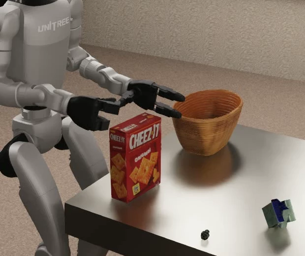
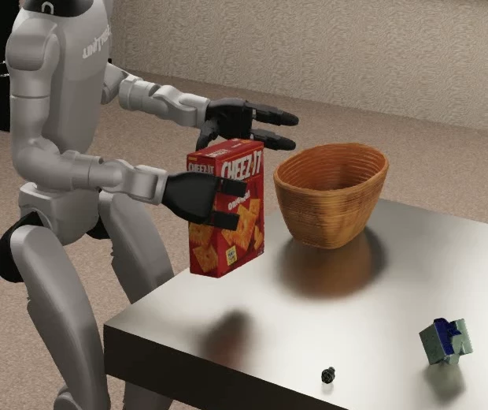
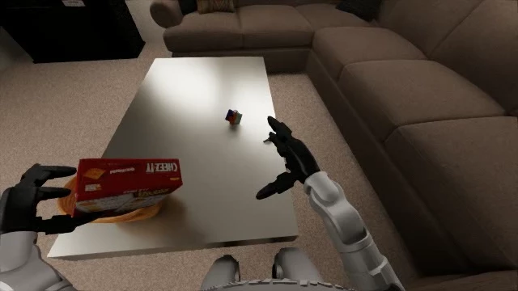
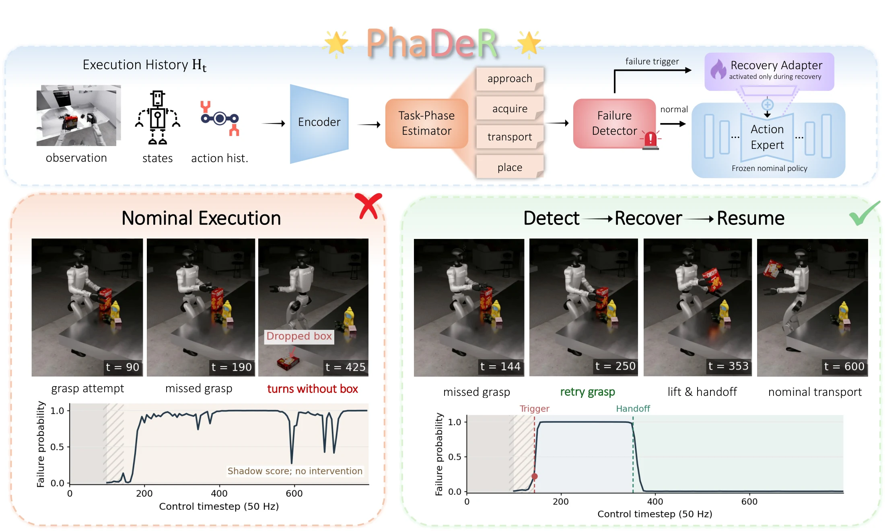
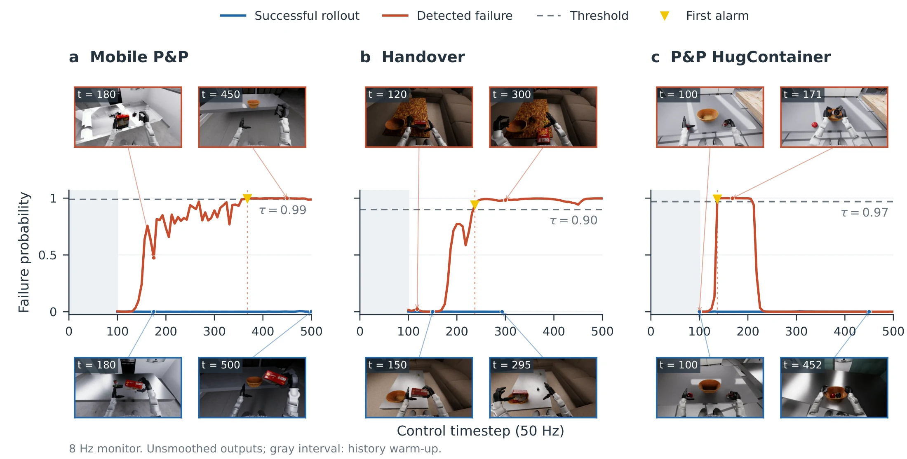

Understand the execution.
A frozen encoder combines V-JEPA 2 visual features, proprioception, and lagged actions. A causal GRU estimates task phase from execution history.
Learning from Corrections and Interventions / 2026
1 The Hong Kong University of Science and Technology
2 Shanghai Jushen Technology
3 Shanghai Jiaotong University
4 Zhejiang University
Work in progress

The initial grasp loses contact with the box.

Control returns to the nominal policy at 12.90 s.

The nominal policy brings the box to the basket.
THE IDEA
Long-horizon humanoid manipulation rarely goes perfectly. A missed grasp can derail everything that follows. Recognizing the failure is only the first step: a correction must leave the robot in a state from which it can continue.
PhaDeR brings together phase-conditioned failure detection and a recovery-only adapter learned from human corrections. The nominal policy stays frozen. When a failure is detected, the adapter takes over; after readiness checks, control returns to the original policy.
Three tasks. The same corrective loop. Watch selected executions move from an acquisition failure to learned recovery and nominal task completion.
NATURAL MISSED GRASP · SAME RUN AS OVERVIEW
The same execution as the overview, from the robot’s view. The initial grasp loses contact. The recovery adapter retries, secures and lifts the box, then the frozen nominal policy resumes and completes the handover.
Original monitor samples · cursor follows video · shaded interval is recovery
Selected development successes in simulation, not an estimate of recovery success rate. Handover shows a natural missed grasp; the other two examples use controlled grasp perturbations. Task-specific deployment monitors and rise-based triggers differ from the shared-detector replay benchmark below. Handover success uses the original target–basket contact criterion; it does not require full hand release. View earlier development keyframes and trigger traces ↗
Grasp-stage excerpts from independent runs in the same scene, illustrating a failed grasp without recovery and a regrasp with recovery.
The same observation can mean different things during approach, grasping, or placement. PhaDeR uses a predicted task-phase belief to put failure evidence in context.
A frozen encoder combines V-JEPA 2 visual features, proprioception, and lagged actions. A causal GRU estimates task phase from execution history.
A phase-conditioned detector recognizes failure. A rank-16 LoRA adapter, trained on human corrections, activates only during recovery.
Simulator-assisted readiness checks gate the handoff. The original Ψ₀ policy [1] resumes with its parameters unchanged.

The execution encoder is pretrained on nominal demonstrations and then frozen. The task-phase estimator and failure detector learn from role-specific supervision; the detector receives predicted phase probabilities, rather than annotated phases.
Task-specific Ψ₀ nominal policies remain frozen. Recovery adapters learn with flow matching, 20% nominal replay, and a preservation loss. The selected task demonstrations use 35 corrective segments for Mobile Pick & Place, 17 for Handover, and 15 for P&P HugContainer.
The current handoff uses simulator-assisted contact, lift, stability, and safety checks. A learned continuation gate is future work.
Across three tasks simulated in SIMPLE [2], predicted phase improves event detection in a matched GRU comparison, with no observed false alarms on the clean test trajectories.
88.2%
Event detection rate± 0.7% across three training seeds+3.1pp
Gain from predicted phaseOver the matched phase-free GRU0/ 72
Clean episodes with an alarmObserved on the held-out test set| Method | Phase input | Detection ↑ | False alarms ↓ | Median delay ↓ |
|---|---|---|---|---|
| GRU detector | None | 85.1 ± 0.7% | 0 / 72 | 22.3 ± 2.9 |
| GT-phase GRU | Annotated | 87.2 ± 0.7% | 0 / 72 | 21.7 ± 1.7 |
| PhaDeR Ours | Predicted | 88.2 ± 0.7% | 0 / 72 | 23.3 ± 2.4 |
126 test episodes · 65 failure events · 72 clean episodes. Mean ± SD over three GRU seeds. Delay is in control steps among detected events. Replay includes post-intervention observations, so these are event-recognition results, not a measurement of autonomous pre-intervention detection.
Detection rate is one part of the story. PhaDeR’s conditional delays are higher than the phase-free GRU’s; the detected event sets differ, so this is not a matched-event timing comparison.

BEYOND LOCAL RECOVERY
Restored-state trials separate passing the local readiness gate from completing the original task. In Mobile Pick & Place, one additional local recovery did not translate into another successful continuation.
| Task | Local recovery | Continuation after handoff | Full completion |
|---|---|---|---|
| Handover | 2 / 6 | 2 / 2 | 2 / 6 |
| Mobile Pick & Place | 3 / 6 | 2 / 3 | 2 / 6 |
| P&P HugContainer | 2 / 6 | 2 / 2 | 2 / 6 |
Selected development outcomes; six reports or trials per task. Conditional continuation counts only trials that reached handoff.
PhaDeR connects failure recognition to task resumption. The next step is to make that connection more reliable: expand corrective data, learn handoff criteria from nominal continuation outcomes, and transfer to real humanoids.
The current study is preliminary and simulation-based. Selected successes establish integration; they do not establish aggregate closed-loop reliability or superiority of probability-rise triggering.
Nga Teng Chan, Pengxu Chang, Yongquan Chen, Xi Zhao, Qifeng Chen, and Dedong Li. “PhaDeR: Phase-Conditioned Failure Detection and Recovery for Long-Horizon Humanoid Manipulation.” 2026.
BibTeX
@misc{phader2026,
author = {Chan, Nga Teng and Chang, Pengxu and Chen, Yongquan and
Zhao, Xi and Chen, Qifeng and Li, Dedong},
title = {{PhaDeR}: Phase-Conditioned Failure Detection and
Recovery for Long-Horizon Humanoid Manipulation},
year = {2026},
url = {https://tengisa1118.github.io/PhaDeR/}
}